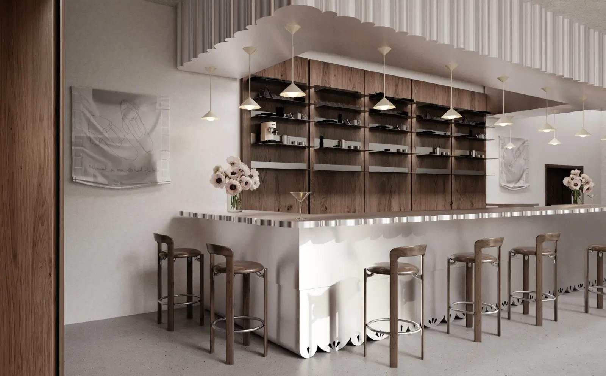
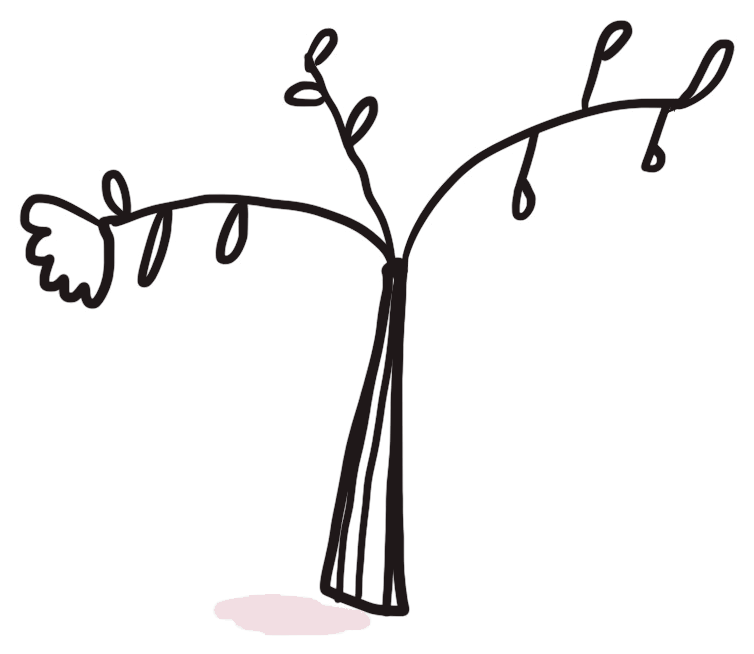
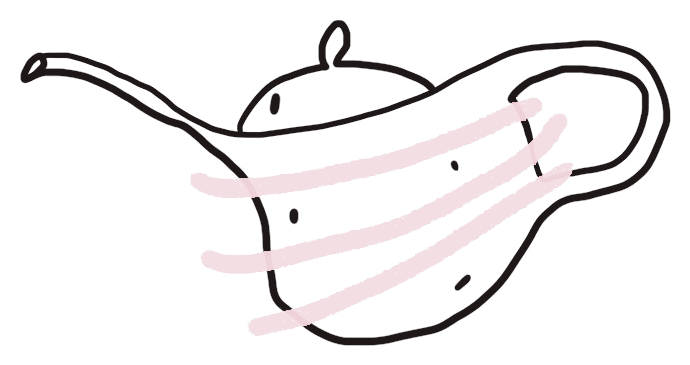
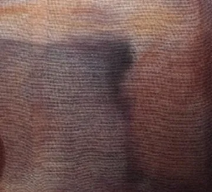
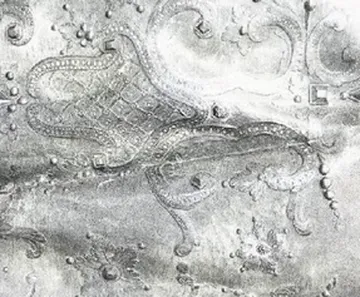
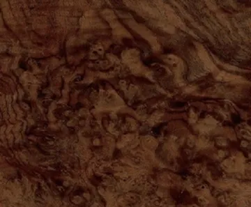
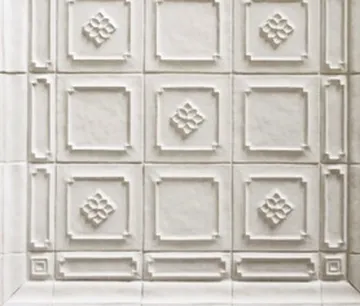
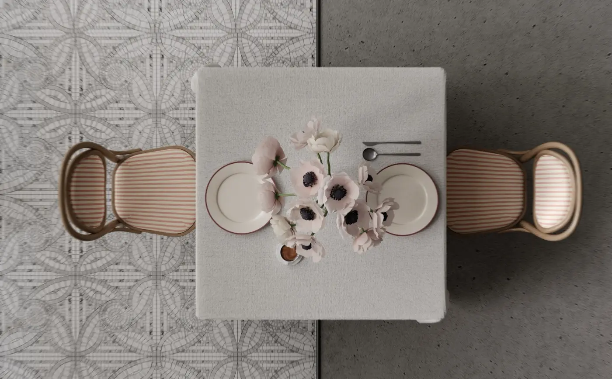

1мин
«Возьми и иди»
Холодильная витрина с коробками, салатами и выпечкой. Взяли, оплатили на кассе или в киоске, ушли на платформу.
кафе·Ленинградский вокзал·открытие в 2027 году
По цене бизнес-ланча. Здесь, на фарфоре, или с собой: порция та же, упаковка без доплаты.


Лет чрез пятьсот дороги, верно,А. С. Пушкин, «Евгений Онегин», глава седьмая
У нас изменятся безмерно…
И заведёт крещёный мир
На каждой станции трактир.
Пушкин отводил на это пятьсот лет, мы управились быстрее. Вокзал открылся в 1851 году, а в 1855-м вместе с дорогой Москва — Петербург получил имя Николаевский. Нам досталось это имя и главная привычка вокзала: здесь все торопятся. Поэтому всё долгое мы готовим заранее, а гостю остаются три минуты и хорошая еда.
три скорости
Холодильная витрина с коробками, салатами и выпечкой. Взяли, оплатили на кассе или в киоске, ушли на платформу.

Томление, бульоны и соусы готовим заранее. При вас только доводка на индукции и под саламандром, номер заказа загорится на экране.
В приложении указываете номер поезда и время выдачи за 20–40 минут до отправления. Заказ ждёт на полке, забираете по коду.
Любой суп из меню (250 г), горячее на выбор: пожарская котлета с демиглас, пельмени ручной лепки, куриное бедро с перловым ризотто или гречка с белыми грибами и пашот. И морс 300 мл. Можно в зале, можно с собой.
в поезд
«Сапсан» идёт около четырёх часов, поезд до Мурманска — больше суток. Поэтому коробку собираем из блюд, которые хороши без разогрева, и запаиваем в лоток. На обечайке — карта маршрута.
Пожарская котлета, гречка с белыми грибами, малосольный огурец, пирожок, морс 300 мл
Сытно и по-петербургски: на четыре часа «Сапсана».
≈450 г + морс790 ₽
Слабосолёная сёмга, картофель с укропом, яйцо, винегрет, ржаной хлеб
Северная рыба и овощи, которые хороши при комнатной температуре.
≈450 г890 ₽
Сырники, ванильная сметана, брусничное варенье, яблоко, ватрушка
Для ранних поездов: открываемся в 05:30.
≈400 г590 ₽
запайка плёнкойбез разогревапредзаказ к номеру поезда
с собой
При заказе вы выбираете «здесь» или «с собой». Порция та же, упаковка без доплаты. Навынос у нас уходит около половины заказов, поэтому упаковку мы продумали так же тщательно, как тарелку.
интерьер
Интерьер вдохновлён французским «поэтическим реализмом» и фильмом Жана Виго «Аталанта» (1934), историей о пути по реке. Вода и туман превращаются в полупрозрачные ткани и драпировки, а красота ищется в повседневном: в дереве, стали и льне. Цвета — чёрный, белый, дерево и винный акцент.








Проект интерьера и рисунки: Адриана Варелджян, проект POETICA, HSE Design. Концепция адаптируется под помещение на вокзале.
приложение
UnionPay, Alipay и WeChat Pay подключим, когда их поддержит банк-партнёр.
пример экрана · номер поезда условный
как найти
Комсомольская площадь, 3